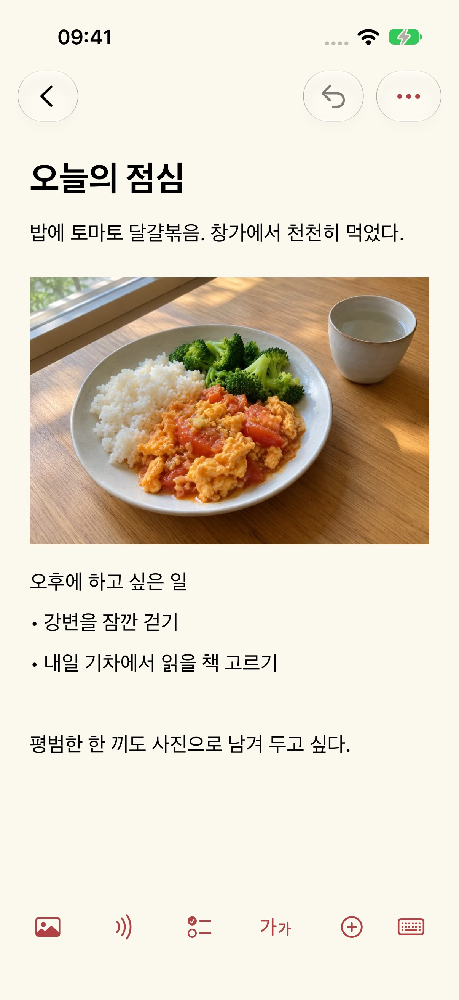
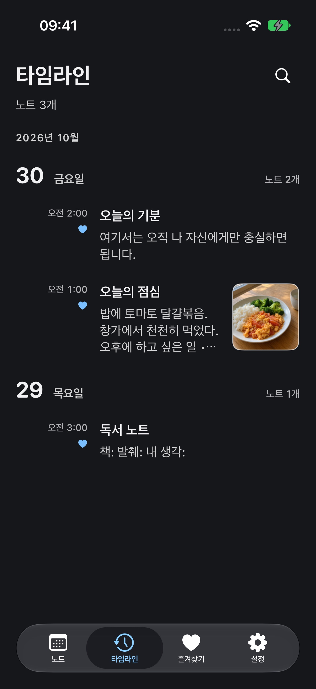

도움말 및 지원
업데이트: 2026-10-29
Mowyns를 만든 이유
간단하고 쓰기 좋으면서 완전히 무료인 기록 도구를 원했습니다. 오래 찾아도 마음에 드는 것이 없어 Mowyns를 만들었고, 지금은 저도 매일 사용하고 있습니다.
오늘을 위한 새로운 페이지
노트를 열면 오늘의 일상이 보이면 좋겠다고 생각했습니다. 달력은 선택한 날짜의 기록을 보여 주므로 어제의 기록은 어제에 남습니다. 돌아보고 싶을 때 날짜를 고르거나 타임라인을 따라가면 됩니다. 지난 기록은 보관하면서 새로운 하루를 시작할 수 있습니다.




노트
오늘 먹은 음식을 찍고 몇 마디를 적어 보세요. 해 보고 싶은 일도 가볍게 남겨 두세요. 글과 사진, 녹음을 한 노트에 함께 담을 수 있습니다.
해당 날짜
여행 전에 열차 정보와 좌석 번호, 승차권 캡처, 가고 싶은 곳을 해당 날짜에 저장하세요. 그날의 페이지를 열면 준비한 계획이 보입니다. 며칠간의 노트가 나만의 간단한 여행 일정이 됩니다.
달력
하루 목록의 맨 위에서 한 번 아래로 당기면 달력이 보이고, 한 번 더 당기면 빠른 검색이 열립니다. 달력을 접은 상태에서 날짜 제목을 좌우로 밀면 이전 날과 다음 날로 이동합니다.
화면 모드
테마 색상과 라이트 또는 다크 모드를 선택할 수 있습니다. 글자 크기와 줄 간격도 읽기 편하게 조절하세요.
새 노트
새 노트를 선택하고 제목과 본문을 입력하세요. 편집기 하단 도구 막대에서 사진, 녹음, 체크리스트, 표와 파일을 추가할 수 있습니다.
백업 및 이전
노트는 이 기기에 저장됩니다. 설정 → 데이터 관리 → 백업 및 이전에서 일반 또는 암호화된 백업을 내보내거나 가져올 수 있습니다. 자동 동기화는 제공하지 않으므로 백업을 직접 보관하세요.
녹음 텍스트
사진 촬영, 스캔 또는 녹음을 사용할 때만 카메라나 마이크 권한을 요청합니다. 사진과 파일은 시스템 선택 화면에서 직접 고릅니다. 권한을 거부해도 일반 텍스트 노트는 작성할 수 있습니다. 텍스트 변환에는 시스템 음성 인식 권한이 필요하며 기기 내 인식만 사용합니다. 기기나 언어가 지원되지 않으면 녹음을 유지하고 변환을 사용할 수 없다고 안내합니다. 클라우드 인식으로 전환하지 않습니다. 시스템 설정에서 권한을 철회할 수 있습니다.
최근 삭제된 항목
설정 → 데이터 관리 → 최근 삭제된 항목에서 노트를 복원할 수 있습니다. 영구 삭제 후에는 이전에 내보낸 백업이 필요합니다. 개발자는 노트 사본을 보유하지 않습니다.